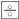

ыстрые ссылки на процедуры, описанные на этой странице:
• |
• |
Corel PHOTO-PAINT предоставляет инструменты для создания симметричных и орбитальных узоров.
Можно рисовать симметричные узоры на изображении, используя режим радиальной или зеркальной симметрии кисти. При рисовании в режиме радиальной симметрии кончики кисти, называемые спутниковыми точками, создают мазки кисти вокруг центральной точки. При рисовании в режиме зеркальной симметрии идентичный мазок кисти создается в горизонтальной, в вертикальной или в обеих плоскостях.
Можно создать эффект спирали, нарисовав изображение с использованием орбит. Орбиты представляют собой круговые пути, которые вращаются вокруг центральной точки. Орбиты позволяют рисовать спирали, стручки и кольца. Например, можно нарисовать одну спираль и настроить размер и плотность колец. Кроме того, можно варьировать размер колец для создания скругленных сегментов, называемых стручками, или сократить число орбит для создания колец.
| Рисование симметричных узоров |
1. |
В наборе инструментов выберите инструмент Краска |
2. |
Откройте меню выбора Категория кисти на панели свойств и выберите
категорию кисти.
|
3. |
Выберите Окно |
4. |
На шкале симметрии нажмите одну из кнопок.
|
• |
Радиальная симметрия : добавление спутниковых точек в
интервалы вдоль радиуса кончика кисти. Введите значение в поле
Радиальные точки, чтобы задать число спутниковых точек.
|
• |
Зеркальная симметрия : создание идентичного мазка в
горизонтальной или вертикальной плоскости изображения. Нажмите
кнопку Горизонтальное отражение , Вертикальное отражение 
или и ту и другую.
|
5. |
Нажмите кнопку Установить центр симметрии и щелкните
изображение, чтобы расположить центральную точку и добиться
симметрии.
|
6. |
Перетащите курсор в окне изображения.
|
Нажмите кнопку Без симметрии на шкале симметрии, чтобы
отключить режим симметрии кисти.
|
| Рисование с помощью орбит |
1. |
В наборе инструментов выберите инструмент Краска |
2. |
Откройте меню выбора Категория кисти на панели свойств и выберите
категорию кисти.
|
3. |
Нажмите кнопку Цвет на панели свойств.
|
4. |
Щелкните строку Орбиты в окне Настройки кисти.
|
Если окно Настройки кисти закрыто, выберите пункт Окно |
5. |
Введите значение в любом из следующих полей.
|
• |
Количество орбит: указание количества орбит, рассредоточенных
вокруг центра мазка кисти. Используйте значения от 1 до 128.
Используйте более низкие значения для спиралей и более высокие
значения для колец.
|
• |
Радиус: задание расстояния между центром мазка кисти и орбитами.
Используйте значения от 1 до 999. Для создания меньшего кончика
требуются более высокие значения.
|
• |
Скорость вращения: указание скорости вращения орбит вокруг мазка
кисти. Используйте значения от 0 до 100. При использовании более
высоких значений кольца ближе расположены друг к другу.
|
• |
Скорость распространения: указание скорости движения орбит к
центру мазка кисти. Используйте значения от 0 до 100. При
использовании более высоких значений увеличивается частота
изменения размера.
|
• |
Величина распространения: указание расстояния, на которое
перемещаются орбиты при вращении по направлению к центру мазка
кисти. Используйте значения от 0 до 100. При использовании более
высоких значений увеличивается частота изменения размера и
создаются стручки.
|
6. |
Перетащите курсор в окне изображения.
|
Можно скрыть или отобразить точку, вокруг которой вращаются
орбиты, с помощью кнопки Включать центр в строке Орбиты
окна Настройки кисти.
|
Copyright 2012 Corel Corporation. Все права защищены.